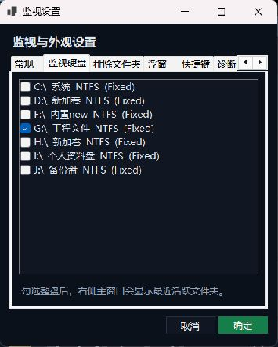
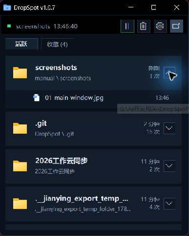

不扫描全盘基于 NTFS / ReFS 增量事件工作，减少磁盘读取。
新建与更新都记录创建文件、重新保存图片或文档，都会刷新对应文件夹。
最快回到现场双击目录、展开最近文件，或直接使用全局快捷键。
01
首次使用，只做 3 项设置
设置 → 监视硬盘勾选需要监视的盘
只选工作盘即可。勾选状态会保存，下次启动自动恢复。

设置 → 排除文件夹过滤缓存和临时目录
监视整个盘，再排除噪音目录，通常比逐个添加监视文件夹更省心。
示例 · C:\Windows\Temp
D:\Cache
项目\.git
排除目录及其子目录不会进入活跃列表。
设置 → 常规需要时开机自动运行
登录 Windows 后自动监视，并以悬浮窗状态待命。
随 Windows 启动
暂停监视时，状态灯会变化；再次点击工具栏按钮即可继续。
02
活跃文件夹：最近写入的位置永远在最上面

1看最上方卡片每当文件新建或重新保存，对应文件夹会按更新时间自动排到顶部。
2双击文件夹卡片直接在资源管理器中打开该目录。主列表最多保留 6 个活跃位置。
3点击右侧展开箭头查看这个文件夹最近更新的 3 个文件；再次点击即可收起。
4单击文件名使用系统默认程序打开文件。右键卡片还能复制路径、收藏或排除。
状态灯为绿色：正在监视删除文件不会加入记录
03
收藏与钉住：把常用目录固定下来
收藏文件夹
在活跃卡片右键选择“加入收藏”，或在收藏页底部手动添加目录。收藏自身或子目录更新时，会自动移动到收藏列表第 1 位。
收藏页：双击打开 · 右键复制路径
浮窗设置：收藏显示数量 1–14 个
排序规则：最新在底部，其余按时间向上展开
钉到浮窗
在文件夹右键菜单选择“钉到浮窗”，它会成为独立快捷图标，不再被下一次活跃目录覆盖。
04
悬浮窗：桌面上的两格快速入口
左边：最新活跃文件夹
双击立即打开最新目录。右键可复制路径、加入收藏、钉到浮窗。
右边：收藏第 1 位
双击打开；单击向上展开收藏快捷栏。拖动外框可移动整组浮窗。
右键目标：打开 · 复制路径 · 收藏 · 钉住
右键空白区：恢复主窗口 · 最小化到任务栏
从任务栏恢复：默认回到悬浮窗状态